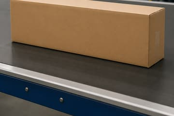
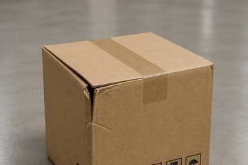
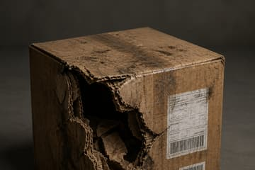

Computer vision · 2026
ML & data pipelineDream2Detect
Can a model learn from generated package images and recognise damage in real photographs?
Explore the codeHow the experiment works
Generate the training images
An image generator produces packages with different damage, shapes, backgrounds, and lighting. These generated images form the task-specific training data.



Three synthetic reference images from the labeling guide. The study groups damage into ten ordered bands, from least to most damaged.
Review what was generated
Asking for a damaged box does not guarantee the generated image shows that damage. A person reviews each image and corrects its label before it enters the training set.
First review pass · 800 generated images
- Original label kept
- 623
- Label corrected
- 177
The expanded pool contained 899 reviewed synthetic images. Models learned from the reviewed labels rather than assuming every prompt produced the intended damage.
Evaluate on real photographs
The trained models assess 385 real package photographs excluded from task-specific training. Each predicted band is compared with the photograph's human-reviewed label.
Unseen during damage training
Learned from synthetic examples
How many bands away?
Exact match means the model chose the reviewed band.
Within one band also includes either neighboring band.
The strongest model used a pretrained visual backbone. “Synthetic training” refers to its package-damage training, not its earlier pretraining.
The result
Results on 385 real photographs
Both models were evaluated on the same real photographs.
64.16%
within one damage band
ConvNeXt ensemble · EMD60 + SAM40
Within-one-band accuracy ↑
- Exact-band accuracy
- 21.04%
- Mean band error
- 1.3351
Near misses were common. The pretrained ensemble transferred better than the custom CNN, but assigning the exact damage band remained difficult.
What it means
What transferred
The strongest model combined two views: the full image and a crop around the package. Its training also accounted for distance between bands, so a large error cost more than a near miss.
The study shows useful transfer on this evaluation set. It does not establish reliable exact-band grading or how results would scale to a larger dataset.